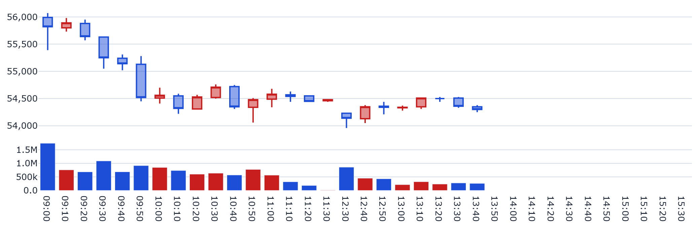
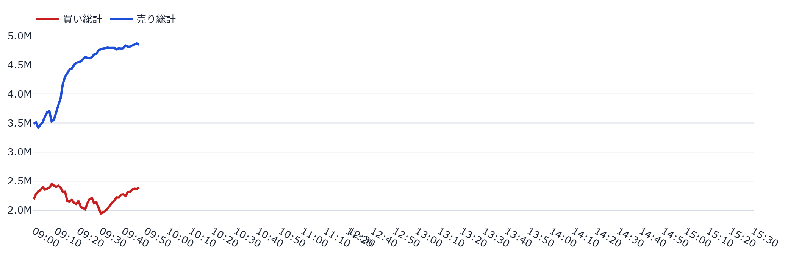
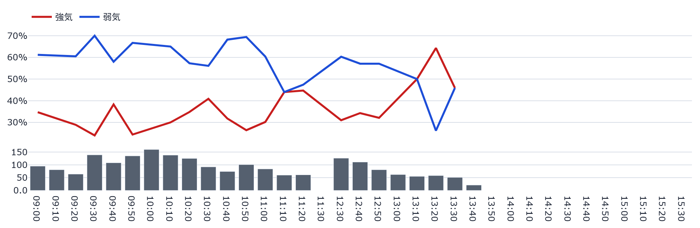

📊 掲示板投稿の詳細分析による投資情報（静的版）
📖 このダッシュボードの読み方（初めての方向け）
① 株価ヘッダー — 現在値・騰落率と最終更新時刻です。裏側のデータは 1分間隔のタスクで自動生成され、このページ自体も60秒毎に ブラウザが自動的に再読み込みして最新のスナップショットを表示します（手動更新は不要です）。 取引時間中に更新が止まっている可能性がある場合は「⚠️データの更新が…」という注意書きが 表示されます。
② 🤖AI考察（常時最上部・タブとは独立） — 下の4タブに表示されている集計値 (株価・掲示板の強弱比率・9指標の発火状況・ボラレジーム・PTS/ADR等)だけをもとにAIが 生成した文章です。個別の投稿内容やユーザー名は一切含まれません。
③ タブ「🔥 センチメント概況」 — 灼熱メーター／阿鼻叫喚メーターは掲示板の 投稿内容から算出した「過熱度」「セリングクライマックス度」の合成指標(売買のシグナル ではありません)。ボラ・レジーム帯は現在の値動きの荒さが「平穏〜急変」のどの水準にあるか の目安で、データ蓄積初期は「較正中」と表示されます(異常ではなく閾値を学習している途中)。 PTS・米国ADR(表示される場合のみ)は東証の取引時間外の値動きの参考情報です。シグナル発火 状況(9指標)は投稿の偏り・語彙・投稿量などを統計的にチェックした一覧で、🟢OK=平常範囲内 ／🟠警戒=やや偏りが大きい／🔴発火=閾値超過、を示す記述的なラベルです。
④ タブ「📈 価格・推移」 — 本日の推移(価格推移10分足・板の買い/売り総計60秒 平均・本日のセンチメント推移)を東証立会時間の同じ横軸で並べています。価格推移の見出し下 には本日の高値・安値も表示します。過去14日間の推移(価格・センチメント)、過去24時間の センチメント推移(暦日をまたぐローリング窓)もこのタブにあります。
⑤ タブ「📐 値動きの目安・海外要因」 — 直近の日次終値リターンの標準偏差(SD) から算出した値幅の目安、海外半導体ピア・当日の値動きの型・執行コスト比較といった市場 コンテキスト、日次の「値動き÷執行コスト」倍率の推移を表示します。
⑥ タブ「📊 統計評価」 — 掲示板センチメント5指標と翌1日/3日/5日リターンの 相関係数r・中央値分割の差(pt)・t値のマトリクスです。緑=相関がプラス・赤=マイナス、 太字は|t|≥2程度の目安です。探索的分析であり確定した予測ではありません。
件数・数量系のグラフ(投稿量・板の買い/売り総計等)に統計的な外れ値が自動検出された場合は、 グラフ直下に「⚠️自動検出された外れ値」として注記が表示されます(値そのものは書き換えません)。
本ダッシュボードは研究・エンタメ用途の情報提供であり、投資助言ではありません。
更新時刻: 2026-09-30T13:42:02（データは1分間隔で自動生成され、このページも 60秒毎に自動再読み込みされます）
⚠️ データの更新が約49分前から止まっている可能性があります(通常は1分毎に自動生成)。
👀 累計閲覧数: 7,150
🤖 AI考察
前回集計(2026-09-30T12:53:30)との比較
---
### 1. 全体像 ― 価格とセンチメントの基本指標
* 現在値 18,195円（前日比＋1.76％）という小幅上昇に対し、強気比率は **55.5％** と過去数週間で最高水準に達しています。一方、弱気比率は **36.0％** に低下し、過熱度スコアは **16.5**（閾値 36）と「平常範囲」内です。
### 2. 掲示板活動の活発化 ― 投稿量・速度の変化
* 本日の投稿数は **2,371件**、投稿速度は **169.4 件／時** と、前回集計時点（約2,093件）から **+278件** 増加しています。これは「話題枯れ」シグナルが **発火** したにも関わらず、依然として活発な議論が続いていることを示唆します。
* 「ネームド集中」（上位5名シェア 6％）は依然 OK ですが、「他銘柄混入率」が **警戒**（10％）に転換している点は注目です。特定銘柄への執着が薄れ、周辺銘柄への関心が広がっている可能性があります。
### 3. シグナル発火と過熱度・悲観度の乖離
* 「話題枯れ」＝投稿数の急激な減少が検知されたものの、同時に「投稿サージ」も **OK**（z = ‑1.1）で、量的にはボラティリティ予測モデルが示す通り平常範囲です。つまり、議論の質は低下しつつも取引量は維持されている構造です。
* 「過熱度スコア」自体は閾値未到達なので、センチメントは「熱狂的」ではなく「慎重」な姿勢が支配しています。このギャップは、**弱気比率の上昇（+0.6pt）** と **強気比率の微減（‑0.7pt）** が同時に起きていることと整合します。
### 4. 前回取引日からの変化 ― なぜセンチメントが揺れたか
| 指標 | 前回 → 今回 | コメント |
|------|------------|----------|
| 灼熱メーター(過熱) | 警戒 → OK | 過熱感が緩和されたことは、価格上昇に伴う利益確定圧力が弱まった可能性を示す。 |
| 他銘柄混入率 | OK → 警戒 | 投資家の関心が分散し始め、285A単独への熱狂が薄れた兆候。 |
| 話題枯れ | OK → 発火 | 投稿量の減少が顕著になり、議論の熱度が低下したことが統計的に捕捉された。 |
この変化は、**価格上昇（+1.76％）** と **強気比率の上昇** が同時に起こったことに対し、一部投資家が「過熱感」を警戒し始めた結果と解釈できます。
### 5. ボラティリティ・レジーム ― 較正中のボラティリティ
* 現在のレジームは **calibrating（BVP = 0.309）** で、ボラティリティ指標は中程度です。過熱度が低いにも関わらず、投稿速度が上昇している点は、**「取引量が増えているが価格変動はまだ抑制されている」** 状態と言えます。したがって、レジームとセンチメントの整合性は比較的良好です。
### 6. 米国市場との地合い ― グローバル要因の影響
* S&P500・NASDAQ はそれぞれ **‑1.2％ / ‑1.6％** の下落でしたが、285Aは逆に上昇しました。これは国内ファンダメンタルズや個別ニュースが主導した可能性が高く、米国市場全体の下落が直接的にセンチメントを押し上げていないことを示唆します。
### 7. 執行コストとの相対的大きさ
* 本日の価格変動幅は約 **176bp**、往復実効費用は **2.76bp** で、変動は執行コストの **≈64倍** に相当します。したがって、取引規模が大きいほどスプレッドやスリッページが利益に与えるインパクトは限定的です。これは「取引コストがほぼ無視できる」ほどの流動性があることを意味します。
### 8. 値動きの型 ― トレンド型・予測不確実性
* 本日の値動きは **トレンド型**（上昇トレンド）で、予測裾の広がりは「普段並み」。事後分類であるため、翌日の継続性や逆転を暗示するものではありませんが、現在は一定の方向感が保たれていると評価できます。
### 9. 総合評価 ― センチメントとボラティリティのミスマッチ
* **強気比率の上昇** と **過熱度の低さ**、さらに **投稿速度の増加** が同時に観測されることは、投資家が「上昇余地」を認識しつつも「過度な熱狂」は避けている姿勢を示しています。
* 「他銘柄混入率」の警戒化と「話題枯れ」の発火は、関心が分散しつつも取引量は維持されている点で、**市場の流動性は高いがセンチメントはやや冷却傾向** にあると読み取れます。
* ボラティリティ指標が較正中であることは、価格変動がまだ抑制的であることを裏付け、執行コストとの乖離が大きい点から、**短期的な取引機会は限定的** と考えられます。
---
以上が、提供いただいた集計データに基づく客観的な分析です。投資判断の際は、本センチメント情報に加えて財務諸表や業績見通しなど他のファンダメンタル要因も併せて検討してください。
生成時刻: 2026-09-30T13:42:02
🔥😱 2大メーター・ボラレジーム


ボラ・レジーム帯

現在レジーム: 較正中 (BVP=0.309)
📰 関連ニュース（直近24時間）
本稿は、直近24 時間以内に配信された「キオクシア」関連のニュース見出しだけを根拠に、現在の市場環境と業界動向を整理したものです。まず、Sandisk がゲーマー向け SSD 「Optimus GX PRO 8100」を刷新したことは、NANDフラッシュ需要の底堅さを示唆しています。一方、エヌビディアと AMD の幹部が清華大学の顧問委員に就任したというニュースは、先端半導体技術が中国でも重要視されつつあることを反映し、キオクシアにとっても供給網や共同開発の機会が広がる可能性があります。また、AVerMedia がエヌビディア Jetson Thor に対応した超小型キャリアボードを発売したことは、エッジコンピューティング向け HBM／NAND の需要増加を裏付けています。さらに、エヌビディアと Anthropic が連携し AI 暴走防止の新基盤を構築した点は、AI データ処理に必要な高速メモリ・ストレージへの関心が高まっていることを示しています。
キオクシア側では、四半期ベースで株価が下落したものの「割安感」が浮上していると指摘され、同時に株式分割が実施されたことが報じられました。この分割は投資家層の拡大や流動性改善を目的とした施策と解釈できます。加えて、岩手県の大学と連携した人材育成プログラムが開始され、地域の半導体産業基盤強化が図られています。その他、楽天らが参画する Open Agent Safety Platform の導入検討や、Moomoo 上でのサンディスク・マイクロン・SK ハイニックスに関するコメントも散見され、NAND 市場全体の競争激化と価格変動リスクが顕在化していることが伺えます。
総じて、キオクシアは製品ラインアップの刷新と株式分割による資本政策を進めつつ、AI・エッジコンピューティング領域での需要拡大という外部要因に敏感に反応しています。一方で、競合他社とのシェア争奪や価格圧力が続く中、割安感が高まっている点は投資家にとって注目すべき材料です。本稿はあくまでニュース見出しに基づく要約であり、投資助言ではありません。
**※ 本要約は「ニュース見出しの要約であり、投資助言ではない」ことを明示します。
※ニュース見出しの要約であり、投資助言ではありません。各見出しから元記事(Google News経由)へ移動できます。
🎯 シグナル発火状況（9指標）
掲示板の投稿を集計した9つの指標が、統計的なしきい値を超えたかどうかを示す一覧です。 「発火」は売買のシグナルではなく、「統計的に見て平常時より偏りが大きい状態」を示す記述的な警告ラベルです。


※研究・エンタメ用途・未検証。売買シグナルではありません。 掲示板は方向よりボラを予測する傾向が文献で報告されています(Antweiler & Frank, 2004)。
📅 本日の推移（イントラデイ）
本日の価格推移（10分足ローソク足・出来高）
本日の高値 18,460円 ／ 安値 17,920円

板の買い・売り総計（成行込み全価格帯・60秒平均）
表示10本の気配だけでなく、外側の気配(OVER/UNDER)と成行注文も含めた板全体の数量合計です。 値は直近60秒間の平均。需給の偏りを直接示す指標ではありません。

本日のセンチメント推移（10分毎・強気/弱気比率・投稿量）

過去24時間のセンチメント推移（10分毎・強気/弱気比率・投稿量）

📈 過去14日間の推移
過去14日間の価格推移（日足ローソク足・出来高）

過去14日間のセンチメント推移（強気/弱気/中立比率・投稿量）

📐 値動きの目安・海外要因
支持線・抵抗線の目安（SD単位）
| 値幅の目安 | 上側の水準 | 下側の水準 |
|---|---|---|
| 0.5SD（±2.14%） | 18,610円 | 17,830円 |
| 1.0SD（±4.28%） | 19,000円 | 17,440円 |
| 1.5SD（±6.42%） | 19,390円 | 17,050円 |
直近14日間の最高値（2026-09-10・19,363円）からの乖離: -5.90%
SDは直近14日間の日次終値リターンの標準偏差（4.28%/日）から算出した値幅の目安であり、到達を予測するものではありません。
市場コンテキスト
海外ピアの値動き・本日の値動きの型はいずれも事実の記述であり、翌営業日の値動きを予測するものではありません。値動き÷執行コストは値幅の大きさの目安であり、実際に利益を確保できることを意味しません。
本日の値動き ÷ 執行コストの推移
| 日付 | 前日比 | 値動き÷執行コスト |
|---|---|---|
| 2026-09-14 | -6.37% | 約230.7倍 |
| 2026-09-15 | +2.29% | 約83.1倍 |
| 2026-09-16 | -1.87% | 約67.9倍 |
| 2026-09-17 | -1.77% | 約64.2倍 |
| 2026-09-18 | +9.40% | 約340.7倍 |
| 2026-09-24 | +0.02% | 約0.7倍 |
| 2026-09-25 | +2.20% | 約79.7倍 |
| 2026-09-28 | -4.37% | 約158.5倍 |
| 2026-09-29 | +0.56% | 約20.4倍 |
| 2026-09-30 | +1.76% | 約63.8倍 |
執行コスト(往復実効費用・実測2.76bp・37日分の板ウォーク実測)は日によらず一定の値として比較しています。倍率が大きいほど値動きが執行コストに対して相対的に大きかったことを示す目安であり、実際に利益を確保できることを意味しません。
掲示板センチメント×株価 統計評価（研究）
| 指標 | 翌1日 | 翌3日 | 翌5日 |
|---|---|---|---|
| 売り煽り度 | r=0.03 -5.42pt / t=-2.17 | r=0.10 -6.31pt / t=-1.41 | r=0.11 -5.48pt / t=-1.02 |
| 買い煽り度 | r=0.27 +3.49pt / t=1.34 | r=0.18 +1.89pt / t=0.41 | r=-0.04 -2.27pt / t=-0.41 |
| 悲鳴・投げ売り度 | r=0.08 +0.70pt / t=0.26 | r=-0.00 -0.77pt / t=-0.17 | r=-0.01 +2.18pt / t=0.40 |
| 強気比率 | r=0.05 +3.03pt / t=1.15 | r=0.05 +3.75pt / t=0.82 | r=0.01 +0.18pt / t=0.03 |
| 投稿数(出来高) | r=0.19 +2.25pt / t=0.86 | r=0.35 +0.23pt / t=0.05 | r=0.23 +0.66pt / t=0.12 |
売り煽り度/買い煽り度/悲鳴・投げ売り度/強気比率/投稿数(出来高)の各指標と、翌1日/3日/5日リターンの相関係数r・中央値分割(高群-低群)の差(pt)・t値。探索的分析であり確定した予測ではありません。指標×ホライズンの多重比較(計15セル)であり、|t|が大きいセルも偶然の可能性を排除できません。色は相関係数rの符号(高群ほど翌日リターンが高い=緑・低い=赤)、|t|≥2程度を目安に太字で強調していますが、統計的に確定した優位性ではありません。データ期間: 2026-03-12~2026-09-04 / 算出日: 2026-09-07。正本の計算ロジック: research/comprehensive_stats.py。
⚠️ 本情報は掲示板投稿を統計的に集計したものであり、投資助言ではありません。個別の投稿内容は含まれていません。研究・エンタメ用途です。